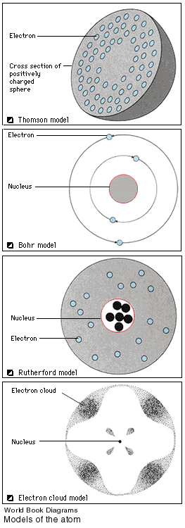

5. Gaining understanding of the atomic structure of matter (middle to
late 1900's)
5. Gaining understanding of the atomic structure of matter (middle to
late 1900's)
 This
knowledge is significant for anthropology because it made possible the development
of absolute-dating techniques. The initial dating method, Carbon 14,
introduced in the late 1940's, was joined by a series
of procedures that permit the reasonably accurate calculation of how
long ago extinct humans lived and provide a temporal context for the
study of human evolution.
|